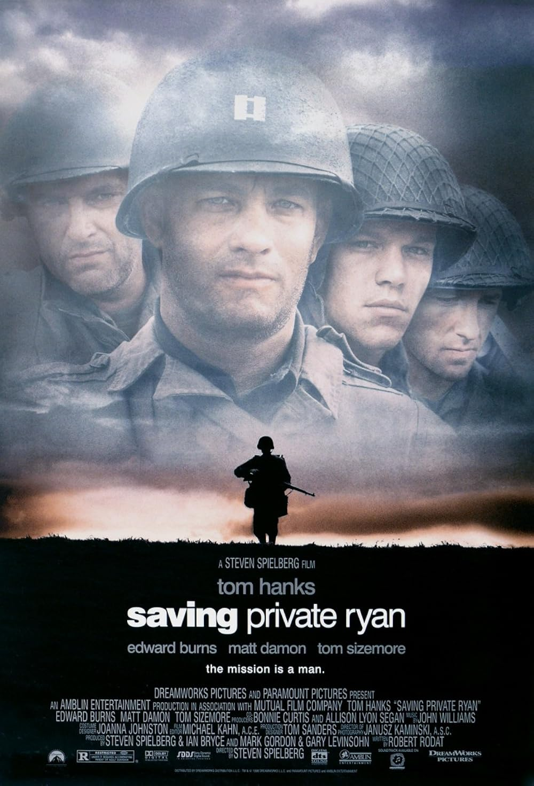
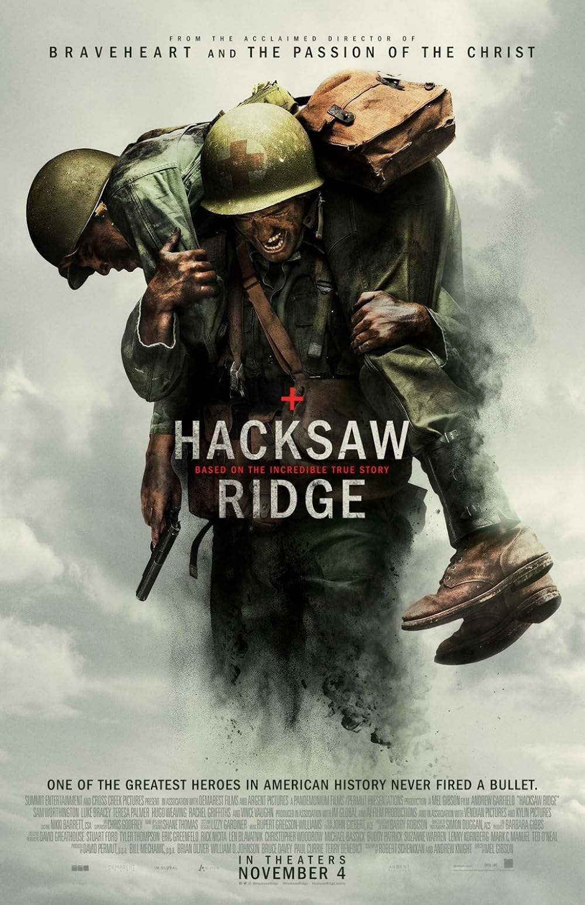

FilmReel Top 15 Movies
THIS IS JUST MY RECOMMENDATION
Top 15 Movies
THIS IS JUST MY RECOMMENDATION
#1

12 Angry Men (1957) | 9.0
1957 DIRECTED BY SYDNEY LUMET
1h 36m | Psychological Drama
In a sweltering jury room, twelve men must decide the fate of a young defendant accused of murder. At first, the case seems straightforward—guilty beyond doubt—and all but one juror are ready to convict. However, Juror #8 refuses to rush to judgment, insisting on a closer examination of the evidence.
As the debate intensifies, doubts arise, and personal prejudices, tempers, and biases come to the surface.
.jpg)
#2
The Pianist | 8.5
2002 DIRECTED BY ROMAN POLANSKI
2h 30m | Docudrama
The Pianist is a historical drama directed by Roman Polanski, based on the autobiography of Polish-Jewish pianist Władysław Szpilman. As Nazi forces occupy Warsaw during World War II, Szpilman (Adrien Brody) witnesses the horrors of war, enduring the brutality of the Warsaw Ghetto and the destruction of his home. Separated from his family and struggling to survive, he finds solace in music, even in his darkest moments.

#3
Good Will Hunting | 8.3
1997 DIRECTED BY GUS VANT SAN
2h 6m | Psychological Drama
Good Will Hunting is a drama directed by Gus Van Sant, starring Matt Damon, Robin Williams, Ben Affleck, and Stellan Skarsgård. The film follows Will Hunting (Matt Damon), a brilliant but troubled young janitor at MIT who secretly possesses an extraordinary talent for mathematics. When his genius is discovered by a professor, Will is given a chance to avoid jail time by studying under the guidance of therapist Sean Maguire (Robin Williams).

#4
The Shawshank Redemption | 9.3
1994 DIRECTED BY FRANK DARABONT
2h 22m | Prison Drama
The Shawshank Redemption is a cult classic drama directed by Frank Darabont, based on Stephen King's novella. The film follows Andy Dufresne (Tim Robbins), a successful banker wrongly sentenced to life in Shawshank Prison. Despite the harsh reality of prison life, Andy maintains his resilience and earns the trust of fellow inmates, especially Red (Morgan Freeman), who becomes his closest friend.

#5
The Silence of the Lambs | 8.6
1991 DIRECTED BY JONATHAN DEMME
1h 58m | Psychological Thriller
The Silence of the Lambs is a psychological thriller directed by Jonathan Demme, based on the novel by Thomas Harris. The film follows FBI trainee Clarice Starling (Jodie Foster), who is assigned to interview the brilliant but manipulative cannibalistic serial killer Dr. Hannibal Lecter (Anthony Hopkins) in an attempt to catch another murderer, Buffalo Bill.

#6
Se7en | 8.6
1995 DIRECTED BY DAVID FINCHER
2h 7m | Psychological Thriller
Se7en is a psychological crime thriller directed by David Fincher, starring Brad Pitt, Morgan Freeman, and Kevin Spacey. The film follows two detectives—veteran William Somerset (Freeman) and impulsive newcomer David Mills (Pitt)—as they investigate a series of gruesome murders based on the seven deadly sins.
As they delve deeper into the case, the killer’s twisted philosophy and meticulous planning push them to their limits, leading to a shocking and unforgettable climax.

#7

Knockin' on Heaven's Door | 7.8
1997 DIRECTED BY THOMAS JAHN
1h 27m | Comedy , Drama
Knockin' on Heaven's Door is a cult German crime drama with elements of comedy, directed by Thomas Jahn. The film follows Martin (Til Schweiger) and Rudi (Jan Josef Liefers), two terminally ill men who meet in a hospital and decide to escape for one last adventure—to see the ocean before they die. Stealing a car, they unintentionally get involved in a criminal chase, pursued by both the police and the mafia.

#8
Saving Private Ryan | 8.6
1998 DIRECTED BY STEVEN SPIELBERG
2h 49m | Period Drama
Saving Private Ryan is a war drama directed by Steven Spielberg, starring Tom Hanks, Matt Damon, and Tom Sizemore. Set during World War II, the film follows Captain John Miller (Hanks) and his squad as they embark on a dangerous mission to find and rescue Private James Ryan (Damon), whose three brothers have been killed in combat.

#9
Dead Poet's Society | 8.1
1989 DIRECTED BY PETER WEIR
2h 8m | Teen Drama
Dead Poets Society is a drama directed by Peter Weir, starring Robin Williams as John Keating, an unconventional English teacher at a strict boys' academy. Through poetry and unorthodox teaching methods, he inspires his students to think for themselves and embrace life passionately.
As the boys challenge societal expectations and personal fears, they learn the power of individuality and self-expression, making Dead Poets Society a deeply moving and timeless film.

#10
Life Is Beautiful | 8.6
1997 DIRECTED BY ROBERTO BENIGNI
1h 56m | Tragedy
Life Is Beautiful is a touching Italian drama directed by and starring Roberto Benigni. The film follows Guido Orefice, a witty and optimistic Jewish-Italian man who falls in love, starts a family, and later finds himself imprisoned in a Nazi concentration camp with his young son.
To shield his child from the horrors around them, Guido turns their ordeal into an imaginative game, proving that love and hope can endure even in the darkest times.

#11
Forrest Gump | 8.8
1994 DIRECTED BY ROBERT ZEMECKIS
2h 22m | Drama
Forrest Gump is a drama directed by Robert Zemeckis, starring Tom Hanks. It follows the life journey of Forrest Gump, a kind-hearted man with a low IQ who unknowingly influences key historical events while pursuing his true love, Jenny.
Through his innocence and unwavering optimism, Forrest teaches valuable lessons about love, destiny, and perseverance, making Forrest Gump an inspiring and unforgettable film.

#12
Interstellar | 8.7
2014 DIRECTED BY CHRISTOPHER NOLAN
2h 49m | Space Sci-Fi
Interstellar is a sci-fi epic directed by Christopher Nolan, starring Matthew McConaughey, Anne Hathaway, and Jessica Chastain. Set in a future where Earth is dying, the film follows a group of astronauts who embark on a mission through a wormhole to find a new habitable planet for humanity.
As they face the challenges of space and time, the story explores love, sacrifice, and the mysteries of the universe, making Interstellar a visually stunning and emotionally profound journey.

#14
One Flew Over the Cuckoo's Nest | 8.7
1975 DIRECTED BY MILOS FORMAN
2h 13m | Medical Drama
One Flew Over the Cuckoo's Nest is a psychological drama directed by Miloš Forman, starring Jack Nicholson. The film follows Randle McMurphy, a rebellious criminal who fakes insanity to avoid prison and is sent to a mental institution, where he clashes with the oppressive Nurse Ratched.

#15
Hacksaw Ridge | 8.1
2016 DIRECTED BY MEL GIBSON
2h 19m | Docudrama
Hacksaw Ridge is a war drama directed by Mel Gibson, starring Andrew Garfield. The film tells the true story of Desmond Doss, a U.S. Army medic and devout pacifist who refuses to carry a weapon but becomes a hero during the Battle of Okinawa.
Through his unwavering faith and courage, Doss saves dozens of lives, proving that bravery comes in many forms. Hacksaw Ridge is an inspiring tale of resilience, sacrifice, and the power of conviction.
